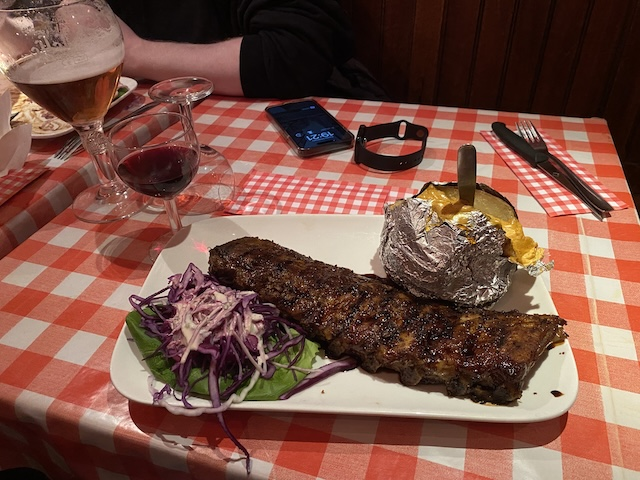
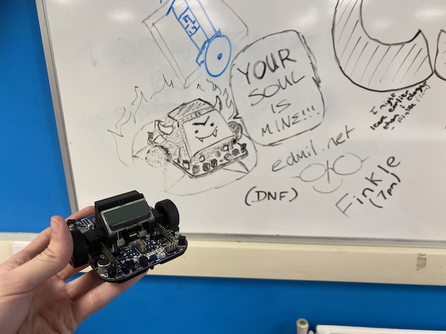

Welcome to edmil.net! I'm Eddie Millichip, a Computer Science student at Aberystwyth University, and this is my personal website. I'm a vintage computing enthusiast, and an active member of aberCompSoc, of which I was a committee member for a year.
I plan on using this site to blog about personal projects, talk about things I'm interested in, and just mess about really! It's currently hosted from an old Dell Optiplex sat in my room, though in future I'd like to host it one some more exotic hardware - maybe one of my old Macs, or a PS3 running Linux.
I'm aware this site isn't the prettiest thing in the world, but it's not really meant to be. I'm not massively interested in web development anyway, and I don't intend to use it to show off my webdev skills (of which there are precious few). Still, I plan on updating it in future, maybe even style it out with some CSS if I'm feeling flamboyant! (EDIT 09/05/2025: It has CSS now! Isn't it pretty?) I want this site to function well on older hardware however, so I won't be opting for anything too complex.
My main interest is probably old technology. I collect old computers, with a particular interest in old Macintoshes, of which I own three four:
I'm also interested in the concept of permacomputing, having been introduced to it in a BCS talk by my friend Rosia Evans. If you're not familiar, it's a movement about making computers last, reducing a lot of the waste and consumption present in modern computing. You can find a better explanation here.
Outside of computer science and electronics, I have an interest in music, being quite proficient in electric guitar and bass guitar, and dabbling in other instruments such as analog synthesizers. This ties into me being a bit of an audiophile, too! I also like to draw occasionally (even if I'm not very good at it), and enjoy the outdoors - particularly getting lost in forests! (could've SWORN this was the right way...)
After finishing my degree, I plan on pursuing a PGCE and going into teaching. I'm passionate about computers, and am eager to share that passion with others! I've helped out before at my old school with a "STEM Day" event, involving robots developed and manufacted in-house by the Computer Science and DT staff.
Following a talk by Marcus Davage, hosted by the BCS Mid-Wales Branch at Aberystwyth University, I've also considered learning COBOL and going into mainframe programming. I'm fascinated by "big iron" such as IBM mainframes (which contributes to my infatuation with G5 Power Macs - it's big iron for the home!), and would like to get more involved! IBM themselves offer free education through their Z-Learn scheme.
Having a home server is, in my opinion, Very Cool, and I want to put it to good work. Here are a few things I plan on doing with it:
Below are links to a couple of websites I find really interesting, for one reason or another. Check them out!
My sincerest, unprompted thanks must go to Lewis, for the provision of Delicious Ribs (pictured below) from Amadeus, in Brussels.
Below is a picture of my beautiful robot illustration, drawn during an all-nighter spent programming my robot. If you came here after following the link on the board (or the Blackboard page), welcome! I hope CS260 is treating you well (and your little robot isn't giving you too much trouble).
